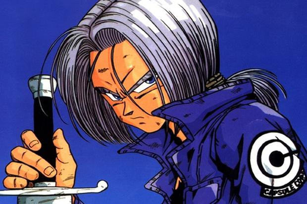

|  | Trunks del Futuro Alternativo (未来のトランクス, Mirai no Torankusu), también conocido como Trunk del futuro en el doblaje al español de España, es un guerrero mestizo saiyano/terrícola, hijo de las contrapartes de Bulma y Vegeta, Bulma del futuro y Vegeta del futuro, así como alumno de Gohan del futuro y aprendiz de Kaio-shin[24], quien, con ayuda de su Máquina del tiempo consigue viajar al tiempo de Son Goku proveniente de una línea de tiempo apocalíptica. |
|